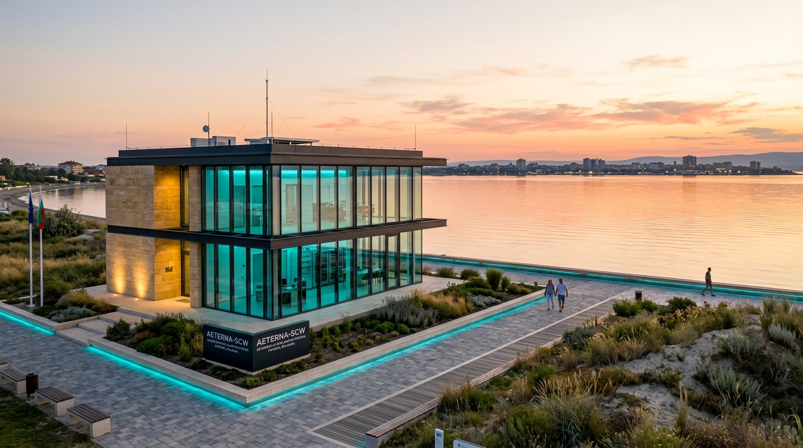

🏛️ АРХИТЕКТУРЕН ОБЛИК & ТОПОЛОГИЯ
STATUS: ACTIVE
ЮЖНА ИВИЦА // БУРГАСКИ ЗАЛИВ (ЗАЩИТЕНА ЗОНА)
8K RENDER
Защитена зона (Южната ивица): Разположена в заветната южна част на Поморие с изглед към Бургаския залив. Полуостровът действа като огромен естествен вълнолом, спиращ североизточните черноморски бури. Водата в залива е спокойна, което позволява елегантна крайбрежна интеграция без нужда от агресивни тетраподи.
Координати (Южен плаж)
42.5580° N, 27.6180° E
Морско вълнение
Завет / Мъртва зона (0.0–0.5m)
Оптичен Интеррогатор
DAS / SOP (10 kHz)
AI Класификация
Mojo O(1) <1.14ms
Ядрена Защита
Linux eBPF <1.02ms
Свързаност
Поморие -> Бургас -> София
Официална институционална регистрация
• Министерски съвет (МТИТС): Вх. № 24421493
• Община Поморие: Рег. № 24421517
• Брюксел (CEF Digital Works): Proposal ID 101354145 (€20,000,000)
• Община Поморие: Рег. № 24421517
• Брюксел (CEF Digital Works): Proposal ID 101354145 (€20,000,000)